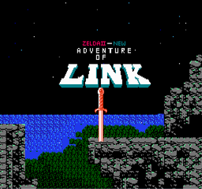

The Legend of Zelda series on the NES introduced players to the world of Hyrule and established the core ideas that defined the franchise. The first game, The Legend of Zelda (1986), offered an open-world adventure where players explore dungeons, collect items, and uncover secrets at their own pace as Link seeks to rescue Princess Zelda from Ganon. It emphasized freedom, discovery, and puzzle-solving in ways no other game had at the time. Its sequel, Zelda II: The Adventure of Link (1987), took a different approach, mixing an overworld map with side-scrolling action and RPG-style leveling. It focused more on combat, magic use, and skill-based play while still retaining exploration and dungeon progression. Together, the two NES titles laid the foundation for one of gaming’s most iconic adventure series.
The Legend of Zelda (1986) The Legend of Zelda introduces players to the land of Hyrule as Link sets out to recover the eight pieces of the Triforce of Wisdom and rescue Princess Zelda from Ganon. The game mixes open-world exploration, dungeon crawling, and puzzle-solving, letting players freely discover secrets, items, and upgrade paths. With its non-linear structure, iconic tools like the sword, boomerang, and bombs, and emphasis on exploration, it established the core formula of the Zelda series.

Zelda II: The Adventure of Link (1987) A bold departure from the original, Zelda II blends side-scrolling action with an overworld map and RPG-style leveling. Link must restore crystals to six palaces to prevent Ganon’s return, gaining experience to upgrade health, magic, and attack power. The game focuses more on combat skill, timing, and magic management while still offering secrets and exploration. Its unique structure makes it the most distinct entry in the NES era.